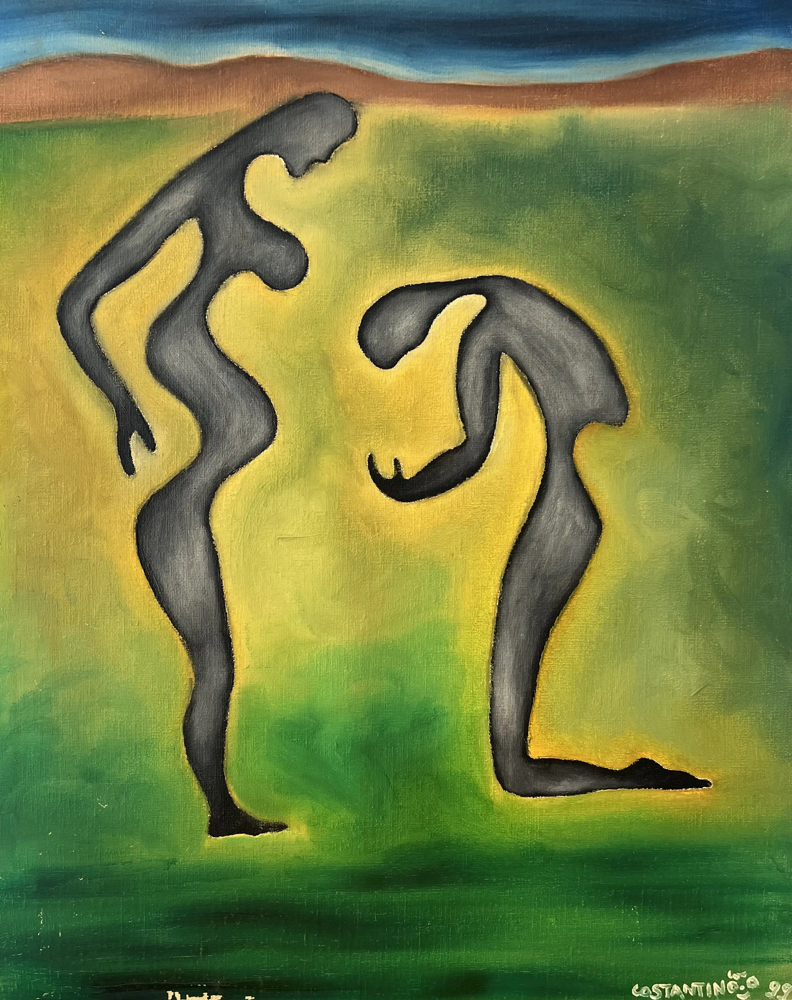
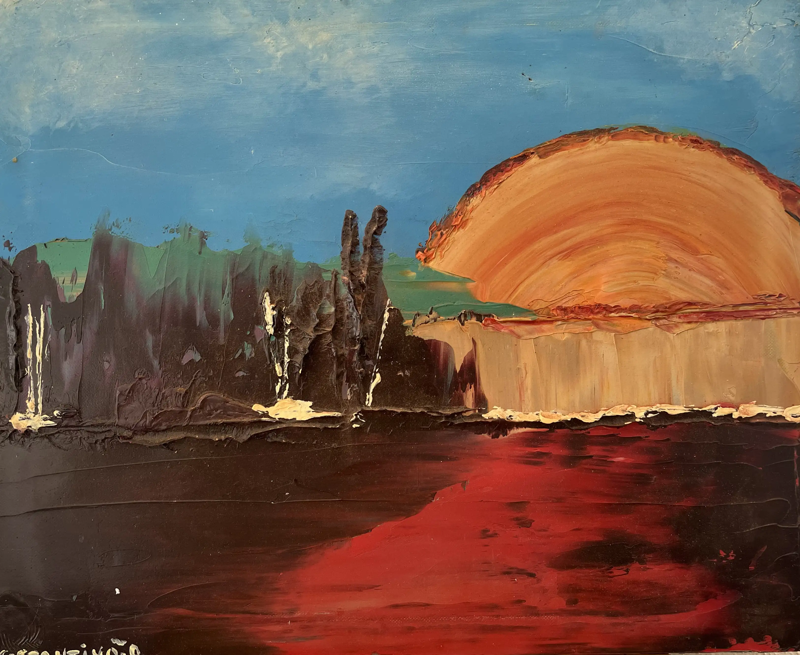
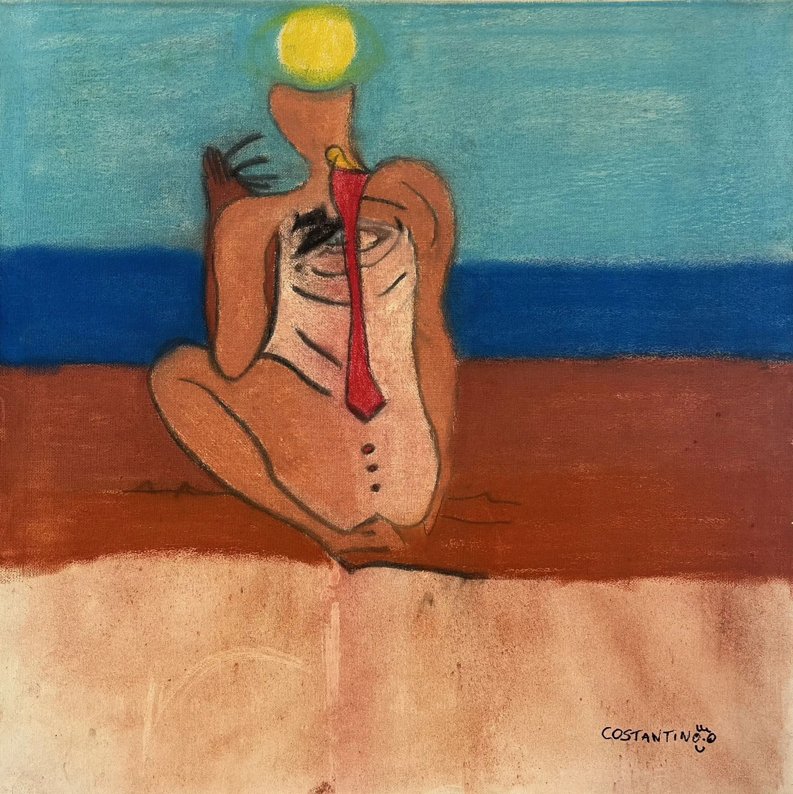
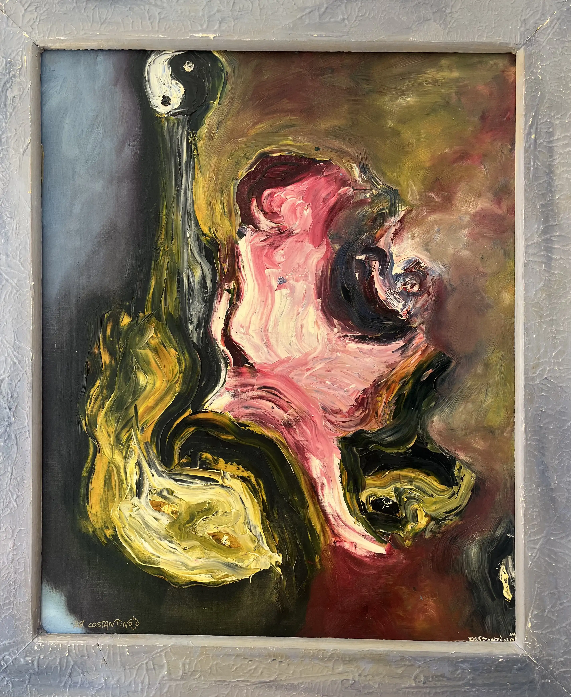
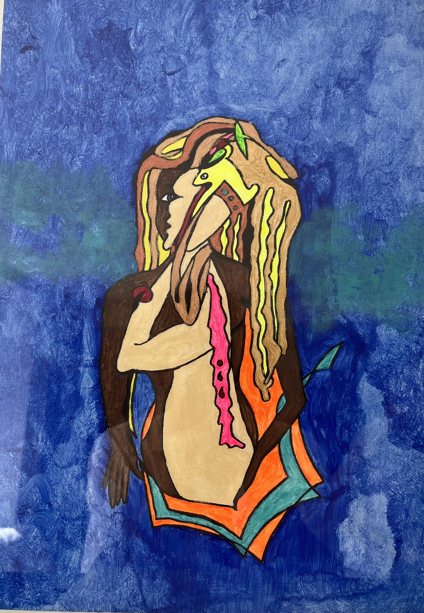
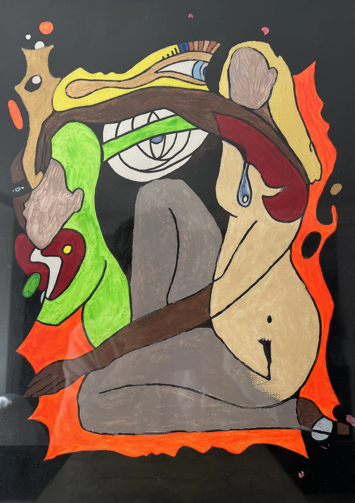
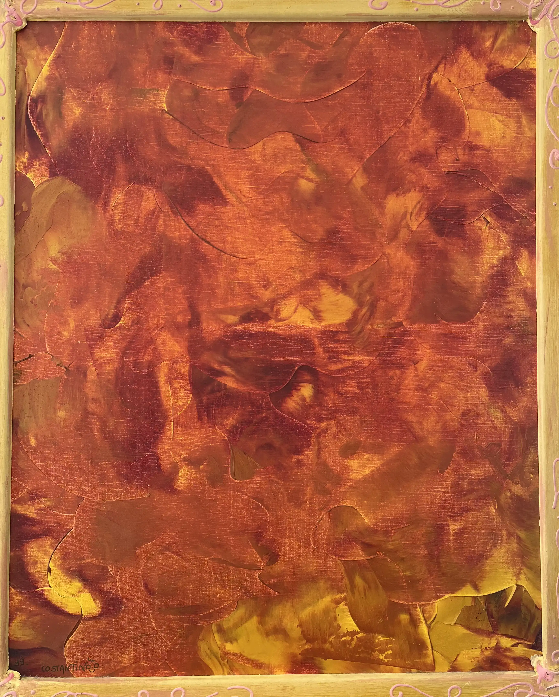

Création

La genèse des couleurs
Tout commence par le choix des pigments et la préparation de la palette. Chaque nuance est soigneusement sélectionnée, mélangée et testée dans le silence de l'atelier. C'est à ce stade précis que l'émotion brute commence à prendre forme, avant même que le pinceau ne vienne caresser la toile.

Le mouvement et la matière
La peinture est avant tout un geste, un dialogue physique entre l'outil et le support. À travers l'utilisation de différents pinceaux, brosses et couteaux, je m'amuse avec les épaisseurs, les empâtements et les transparences pour donner du relief à la matière et accrocher la lumière.

Inspirations plurielles
Nourri par la musique qui résonne en permanence autour de moi, par la nature environnante ou de simples bribes du quotidien, mon processus créatif est très instinctif. Chaque coup de pinceau tente de traduire une sensation, un souvenir ou un état d'âme qui refuse de s'exprimer par de simples mots.

L'achèvement
Savoir quand une toile est véritablement terminée est peut-être l'étape la plus délicate de la création. C'est le moment de prendre du recul, d'observer l'équilibre des forces et de laisser l'œuvre respirer. C'est cet instant précis où la peinture semble enfin trouver son propre souffle.
Découvrir les toiles
Galerie des Toiles



Faites glisser pour explorer • Cliquez pour agrandir


Acquérir une œuvre
Une toile a retenu votre attention ou vous souhaitez commander une
œuvre sur mesure ?
N'hésitez pas à me contacter.